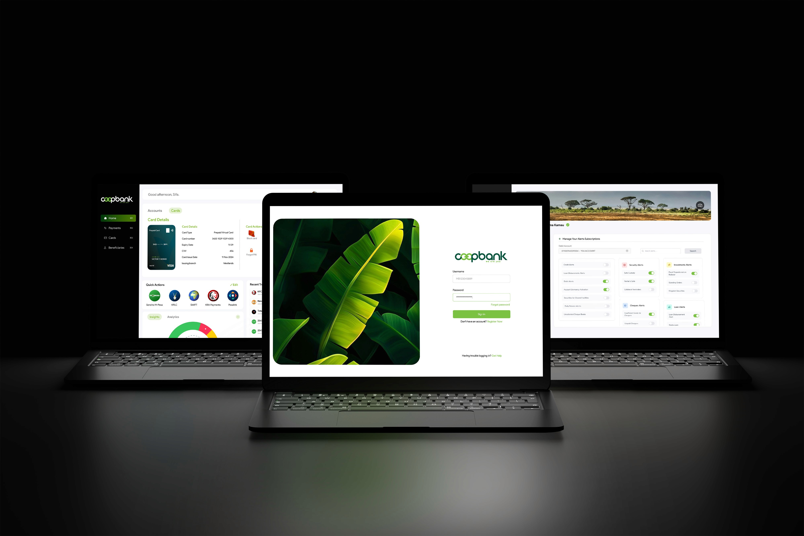
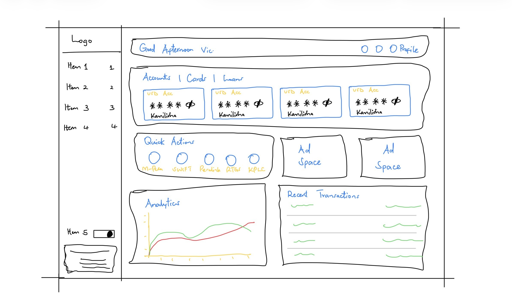
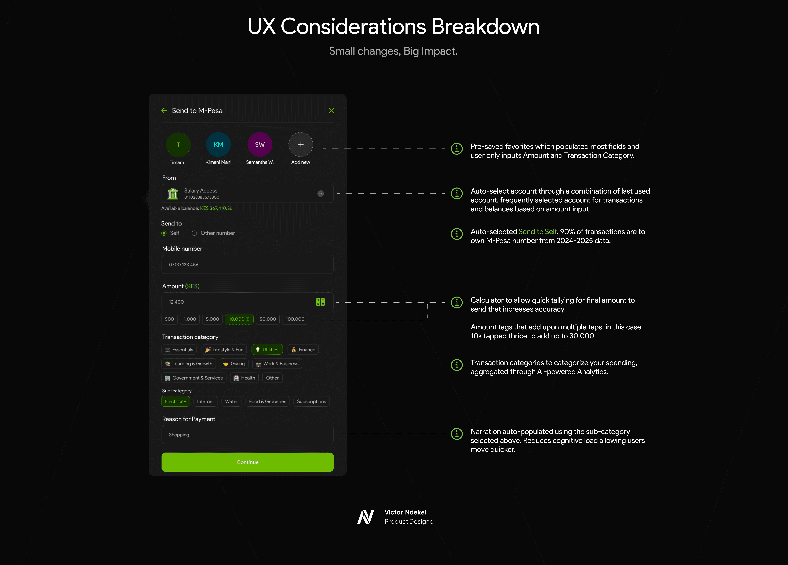
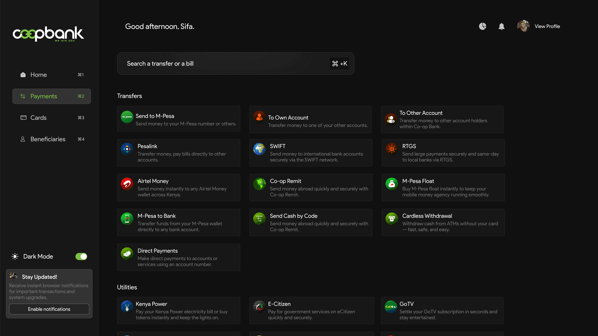

Transforming The Co-op Bank Web Experience
Redesigning the web platform to not only achieve feature parity but to deliver a user experience so intuitive it could empower users, rebuild brand consistency, and solidify Co-op Bank's position as a digital leader.

Overview & Introduction
Co-operative Bank, a trusted Kenyan financial institution for 60 years, was at a pivotal moment. While the bank was successfully beginning its digital transformation with a new native app, its core web platform—the digital "front door" for millions of users—lagged behind.
The existing platform was built on legacy foundations, creating a disjointed experience. Worse, it hadn't been designed with users in mind. It was a "tick-a-box" solution—a tool developed simply to exist, not to solve actual customer pain points or empower users.
Transformation wasn't just about a visual facelift; it was about shifting from a transaction-heavy focus to a user-centric experience that redefined how Kenyans managed their finances online.
Role & Responsibilities (Lead UI/UX Designer)
- User Research & Pain Point Analysis
- Information Architecture & User Flow Mapping
- Wireframing & High-Fidelity Prototyping
- Usability Testing & Iteration
- Cross-functional collaboration with developers and product managers.
The Process: From Friction to Flow
"To fix the experience, I first had to precisely measure the friction. We moved beyond assumptions and dove into data."
Phase 1: Understanding the "Why" (Discovery)
- Heuristic Evaluation: Audit of the existing platform identified 14 major usability roadblocks, including confusing navigation and hidden core features.
- User Feedback Analysis: Analysis of support tickets and customer feedback to find the points of most friction.
- Stakeholder Interviews: Aligned the product vision with business goals of customer retention and digital-first banking.
Phase 2: Defining the "How" (Strategy & Design)
- Strategy: Fix the foundation by introducing a hierarchical arrangement of data, presenting it in a digestible, scannable manner.
- Rapid Prototyping: Used the "Crazy 8s" methodology to generate dozens of layouts.
- Winning Concept: A bento-based dashboard chosen for superior scannability and scalability.

The Solution: Small Changes, Big Impact
Concept: Redesigning the dashboard from a "digital dumping ground" into a user-centric "mission control."
Key Features
- Clear information hierarchy and at-a-glance scannability.
- Centralized account overview and quick actions.
- Personalized insights and status widgets.

Designing Intelligent Transactions
Focus: Streamlining complex flows to reduce cognitive load and increase confidence.

Outcomes & Conclusion
Measurable Wins
- Drastic Reduction in User Friction: Send to M-Pesa drop-off rate reduced to 3% (compared to as much as double that on the native app).
- Massively Improved Task Completion: Core tasks now take 16 seconds on average.
- Increased Satisfaction: User satisfaction scores increased by 45% in post-launch surveys.
This project was more than a redesign; it was a strategic repositioning of the bank's most critical digital asset. It serves as a new, scalable foundation that empowers users and firmly establishes Co-op Bank as a leader in Kenya's digital banking landscape.
